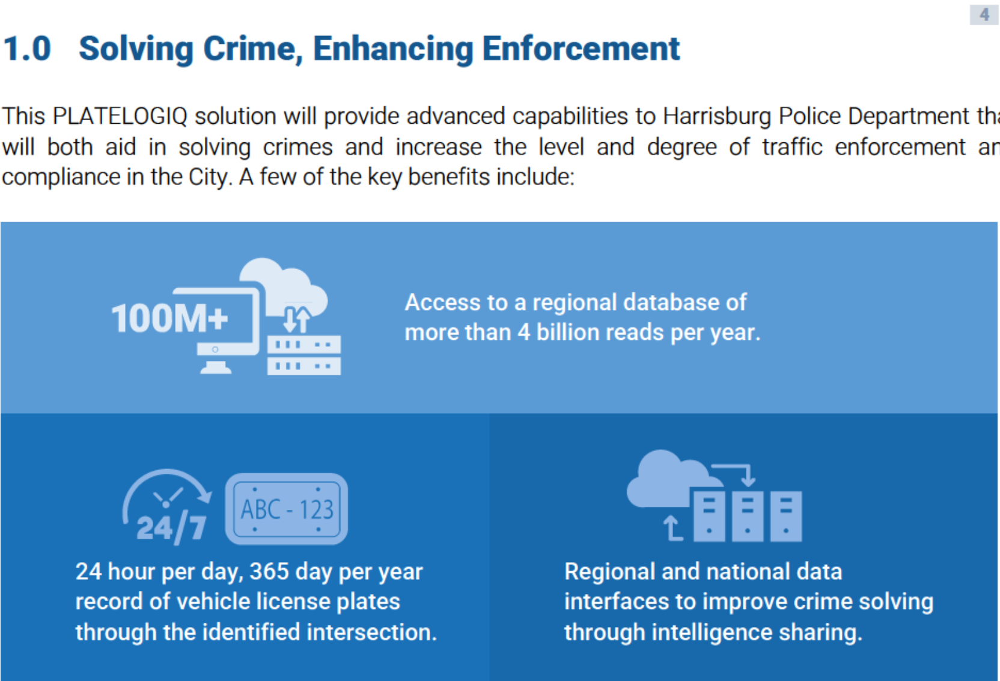

ALPR - Automatic License Plate Readers
This site publishes records received through a Pennsylvania Right-to-Know (RTK) request filed with the City of Harrisburg. That RTK request was centered around the cities recent installation of Automatic License Plate Readers (ALPR). Installed with the intent to fight crime this technology creates an indiscriminate and constant surveillance network in the city. This is a liability for citizens. In documents returned the systems ability to tie into wider databases is highlighted. The below image is an example from the selected vendors (PlateLogiq) proposal.
Right-to-Know Request
The Right-to-Know request can be found here.
The City was professional to work with and responded on time with the requested materials. All citizens should feel empowered to ask their government questions. What's your question?
Returned Documents
Below are documents provided in response to the RTK request. The documents that were returned had the names and contact information for individuals related to the project. From sales-people to points of contact. This is about privacy, so we're not trying to blast out working people's info. The only redaction done on the returned documents are specific names. In addition to ALPR information this returned a continuation of The Cities contract with Cellebrite - a well known cell phone ripper software that breaks into and duplicates a phones content.
ALPR Camera Locations
Using the RTK documents, we identified the locations of fixed Automatic License Plate Reader (ALPR) cameras within the City of Harrisburg.
What the Documents Show
- Locations of installed ALPR cameras
- Planned expansion of fixed camera coverage
- Future plans to deploy ALPR devices on HPD patrol vehicles
- Ongoing software, maintenance, and subscription costs
Current Contractor
The documents identify PlateLogiq as the current contractor providing ALPR hardware, installation, and software services for the City of Harrisburg.
This section will be expanded with details about contract terms, system capabilities, renewal periods, and vendor responsibilities.
Installed Camera Details
The RTK response contains limited data on specifics related to the cameras. From these images it appears to be an Axis model, manufactured by Axis Communications .